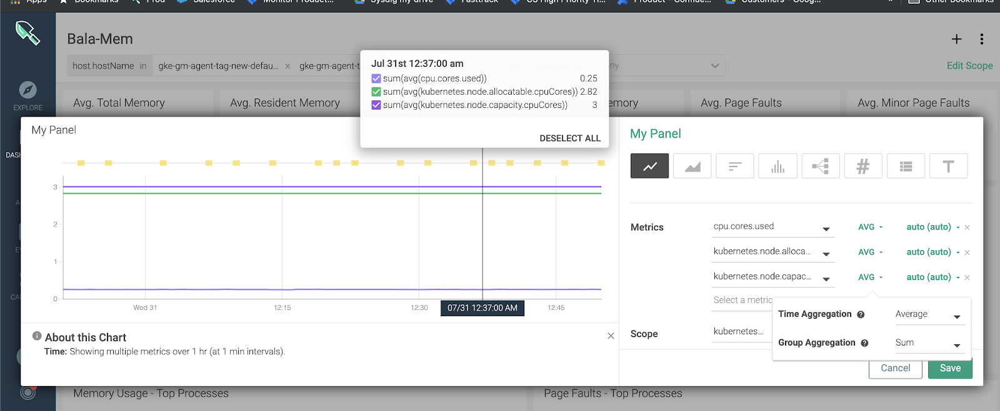

SaaS: Sysdig Monitor Release Notes
November 21, 2019
Overview Is GA
Overview is now generally available. Overview leverages Sysdig's unified Kubernetes data platform to monitor, secure, and troubleshoot your Kubernetes clusters and workloads.

Major highlights of Overview GA include but are not limited to:
Multi-cloud view of the health, risk, and capacity of your Kubernetes infrastructure— a single pane of glass for Kubernetes Clusters, Nodes, Namespaces, and Workloads across a multi- and hybrid-cloud environment. You can easily filter by any of these entities and view associated events and health data. View the infrastructure organized by Clusters, Nodes, Workloads
Shows metrics prioritized by event count and severity, allowing you to get to the root cause of the problem faster.
Drill down to Dashboards for instant insights.
To learn about the capabilities of the Overview feature, see Overview.
Beta Features: Prometheus and New Dashboards
Introducing Prometheus and New Dashboards available in Beta. Contact sales@sysdig.com to join the Beta Program.
[BETA] Prometheus Capabilities
Sysdig now supports native Prometheus time series ingestion. Run Prometheus queries inside Sysdig Monitor and create visualization by using the new Beta Dashboards that support it. This enables you to use Sysdig Monitor as a standard Prometheus data source for other visualization tools, such as Grafana. For more information, see Using PromQL.

With this support, Prometheus and Sysdig metrics can now be supported in regular Prometheus expressions.

[BETA] New Dashboards
Sysdig Monitor provides an enhanced New Dashboard to use with Prometheus. For more information, see New Dashboards.
The New Dashboards offer:
Flexibility to position the Legend.
Ability to run multiple queries.
Inherit the Dashboard scope to individual panels.
Multi-select items in the Legend to narrow down the lines you want to focus on. Use command-click on Mac and Control-click on non-Mac machines.
Features new query types: Form-based and PromQL expressions with the easy toggling facility.
Enhanced auto-layout with the ability to re-position panels.
To access the New Dashboards:
Click the Dashboards tab on the left navigation panel.
Click Add Dashboard (+)

Click Beta Dashboards.

Enhanced Out-of-the-box Dashboards
In an attempt to improve the Dashboards experience, the following changes have been introduced:
The following Dashboards are added:
Kubernetes Cluster Overview: Provides nodes and workloads availability and highlights the high-level health of your Clusters. It also summarizes resources consumption (CPU, memory) across Nodes and Namespaces to pinpoint possible anomalies and node disk utilization
Kubernetes Node Overview: Provides availability of the Nodes, indicating potential issues reported by Kubernetes; a summary of resource (CPU and Memory) allocation and utilization, as well as Network and Disk utilization.
Kubernetes Namespace Overview: Provides a high-level summary of availability, and resource allocation and utilization across all the Workloads in the selected Namespace.
Kubernetes Deployment Overview: Provides a detailed summary of pod status, pod restarts, as well as resource allocation and utilization across pods for each Workload.
Kubernetes StatefulSet Overview: Provides a detailed summary of pod status, pod restarts, as well as resource allocation and utilization across pods for each StatefulSet.
Kubernetes DaemonSet Overview: Provides a detailed summary of pod status, pod restarts, as well as resource allocation and utilization across pods.
Kubernetes Job Overview: Provides a detailed summary of job status, completion trend, pod restarts, as well as resource allocation and utilization across pods.
Kubernetes ReplicaSet Overview: Provides a detailed summary of pod status, pod restarts, as well as resource allocation and utilization across pods for each ReplicaSet.
Kubernetes Pod Overview: Provides a detailed summary of pod status, pod restarts, and resource allocation and utilization in a selected pod.
Kubernetes Workloads CPU Usage and Allocation: Helps you verify that CPU requests are properly configured and actual utilization is expected.
Kubernetes Workloads Memory Usage and Allocation: Helps you verify that memory requests are properly configured and actual utilization is expected.
Kubernetes CPU Allocation Optimization: Helps you verify that infrastructure resources are available for future needs and are not wasted.
Kubernetes Memory Allocation Optimization: Helps you verify that infrastructure resources are available for future needs and are not wasted.
The following Dashboards are retained:
Health Overview (applicable to all the objects in the environment)
Horizontal Pod Autoscaler (the default Dashboard when selecting an HPA)
Resource Quota
Service Health (the default dashboard when selecting a service)
Cluster and Node Capacity
The following Dashboards are removed:
State Overview
Daemonset State
Namespace State
Stateful State
Nodes State
Deployment State
Deployment Health
Nodes Health
Namespace Health
Pod State
Pod Health
Replica Set Health
For more information, see Pre-Defined Dashboards.
What's n/a?
The Sysdig Monitor UI displays n/a in several scenarios associated with labeling. The Explore UI has now been enhanced to add a tooltip for n/a to help you understand the scenario. See The Meaning of n/a for more information.
Filtering Events by Scope
Events are now filtered by Scope to show the most relevant Events in Explore and Dashboards. This is an extension of the existing Event Scope functionality. You can toggle between showing Event feed from the entire infrastructure and only from the particular scope you are interested in within the infrastructure. Event scoping for Dashboards and Explore is enabled by default.

Filter Events by Scope in Dashboards
By default, Events are filtered to show only the relevant ones. However, you can turn the filtering off and see Events from the complete scope. To do so:
Click the Dashboard Settings (three dots) icon and select Events.
Use the toggle button to turn off Filter events by dashboard Scope.

Click Save.
Similarly, you can filter Events by Scope in Explore.
Known Issues
Time Chart may encounter some response time delays
Not all the functionality from the existing dashboards will be available in the new dashboards. The following functionalities are not yet fully functional or not yet available:
Gauge chart
Text Panel
Top Chart
Table
October 11, 2019
Ability to "Favorite" a Dashboard
Users can click the star icon to mark a "Favorite" dashboard, which will then be listed under "My Favorites" in the Dashboard view.


Enhancement: Additional Metrics Segmentation
This change enables Sysdig Monitor to segment metrics file.bytes.in and file.bytes.out by file.mount and file.name.
Enhancement: New Documentation Site at docs.sysdig.com
Sysdig's documentation platform has been upgraded and moved to docs.sysdig.com.
Improvements include:
Look and feel: Updated to match the rest of the Sysdig branding
Search: Enhanced search speed, accuracy, and ease
Structure and content: Enhancements to content have been added and are being continuously updated
Feedback: Buttons on each page enable users to communicate directly with the documentation team.
August 14, 2019
New Default Kubernetes Grouping
Groupings for Kubernetes have been modified. This updated Grouping is available to new teams. Default groupings are immutable–-they cannot be modified or deleted other than by copying. Modifying a copy is allowed.
New Groupings:
Clusters and Nodes (
cluster.name > node.name > pod.name > container.name)Deployments (
cluster.name > namespace.name > deployment.name > pod.name > container.name)Services (
cluster.name > namespace.name > service.name > pod.name > container.name)Statefulsets (
cluster.name > namespace.name > statefulset.name > pod.name > container.name)Daemonsets (
cluster.name > namespace.name > daemonset.name > pod.name > container.name)ReplicaSets (
cluster.name > namespace.name > deployment.name > replicaset.name > pod.name)HPAs (
cluster.name > namespace.name > hpa.name > pod.name > container.name)
For more information, see Grouping, Scoping, and Segmenting Metrics.
Enhanced Event Notification
The ability to customize the subject and body of alert notifications with variables has been extended to Event notifications. Event titles and notification messages are in sync in the following cases:
Event feed on the Events page
Event overlay on Dashboards page
For more information, see Events.
Units for Metrics
The format of metric units are the same for the following:
The CPU and Memory metrics for Host and Container.
Kube-state CPU and Memory metrics.
|  |
Introducing the same format now makes the comparison of those metrics easier on a chart.
Container Segmentation
Sysdig now supports segmenting all net.* metrics at container or pod level by low level net.* dimensions, such as net.http.url or net.http.status.code. Container-based teams now display segmentations for net.http.* metrics as expected. The net.http.url and net.http.status.codes are displayed if you select a container-based team as it does for a host-based team for the same cluster.
Display Instance Name
Instance name in the Sysdig Monitor UI is now visible during creating and editing it. Instance names are displayed right below the username in the user dialog for switching teams.
Default Dashboard for Cluster and Node Capacity
Kubernetes Cluster and Node Capacity Dashboard has been refreshed to add actual usage of CPU and Memory compared to Requests, Limits and Allocatable capacity.
 |
Aggregation for Kubernetes Nodes Health
Aggregation method has been refreshed for Kubernetes Node metrics. The Kubernetes Node Health dashboard has been updated with metric aggregations that are 'summed' across all containers running on the node to reflect accurate node level data.
July 11, 2019
Enhanced Dashboard Menu
The Dashboard menu features a drawer-style popover that displays a list of Dashboards you own and those shared by your team. With the popover menu, you can add new Dashboards and search for existing ones. Click a Dashboard name to access the relevant Dashboard page where you can continue with the regular Dashboard settings.
 |
Customize Alert Notification Template
Sysdig Monitor alerts now provide an option to customize the messages that are sent with alert notifications in email and other channels, such as Pagerduty and Webhook.
Use the Alert Editor to input dynamic variables, such as hostname, or a hyperlink, and to add custom messages in plain text to the notifications for intended recipients. You can modify both the subject and the body of the alert notification with a hyperlink or a variable. For example, you can add an agent id or a link to a Dashboard to the message. This can help provide context for troubleshooting the errors that triggered the alert.
For more information, see Customizing Alert Notification.
 |
Prometheus Remote Scraping
Sysdig Monitor can now collect Prometheus metrics from remote endpoints with minimal configuration.
Remote endpoints (remote hosts) refer to hosts where the Sysdig agent cannot be deployed, e.g., a Kubernetes master node on managed Kubernetes services such as GKE and EKS, where user workload cannot be deployed. To enable remote scraping on such hosts, simply identify an agent to perform the scraping and declare the endpoint configurations in the agent configuration file.
The collected Prometheus metrics are reported under and associated with the agent that performed the scraping, rather than with a process. For more information, see Collecting Prometheus Metrics from Remote Hosts .
Enhancements to Kafka AppCheck
Kafka integrations can now support authentication and SSL/TLS. If authentication or SSL/TLS are enabled in Kafka, see Apache Kafka Example 5 for how to enable configuration details on the Sysdig side.
Two New Metrics for Accurate Pod Counts
Two new Kubernetes metrics, kubernetes.namespace.pod.desired.count and kubernetes.namespace.pod.available.count, have been added at the Namespace level to track desired and available pod counts.
Note
For earlier release notes, please see Sysdig Monitor SaaS Release Notes, here.